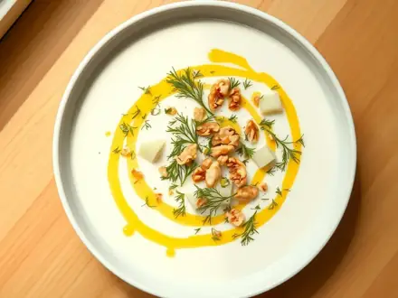
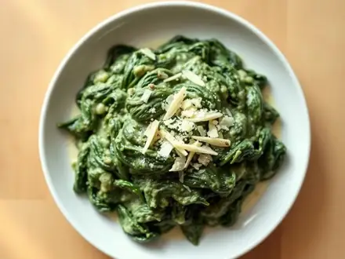
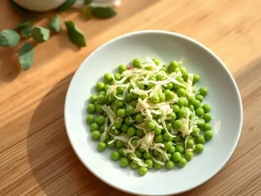
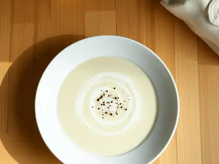
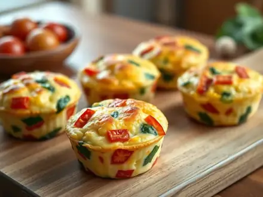
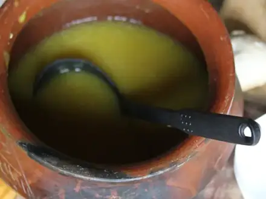
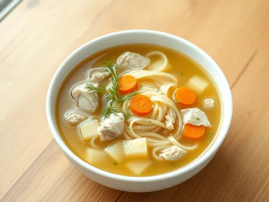
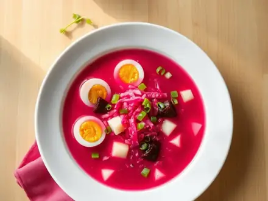
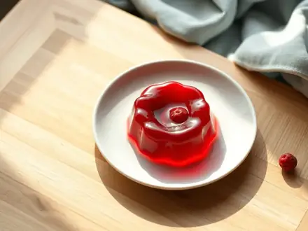
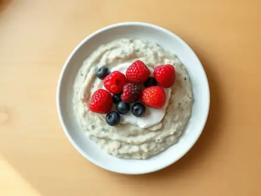

ПП-рецепты: лёгкие блюда до 400 ккал
Лёгкие блюда с подсчитанным БЖУ на порцию. 133 рецептов: у каждого время, калории и БЖУ на порцию, пошаговые инструкции и список покупок
 Смузи банан-ягоды5 мин · 158 ккал · Б 5 г · Напиток
Смузи банан-ягоды5 мин · 158 ккал · Б 5 г · Напиток Яйца всмятку и в мешочек10 мин · 173 ккал · Б 14 г · Завтрак
Яйца всмятку и в мешочек10 мин · 173 ккал · Б 14 г · Завтрак Кускус10 мин · 233 ккал · Б 6 г · Гарнир
Кускус10 мин · 233 ккал · Б 6 г · Гарнир Салат из свежих овощей10 мин · 130 ккал · Б 2 г · Салат
Салат из свежих овощей10 мин · 130 ккал · Б 2 г · Салат Ачичук10 мин · 41 ккал · Б 2 г · Салат
Ачичук10 мин · 41 ккал · Б 2 г · Салат Творог с зеленью10 мин · 237 ккал · Б 27 г · Закуска
Творог с зеленью10 мин · 237 ккал · Б 27 г · Закуска Смузи-боул со шпинатом и бананом10 мин · 334 ккал · Б 14 г · Завтрак
Смузи-боул со шпинатом и бананом10 мин · 334 ккал · Б 14 г · Завтрак Салат «Капрезе» с моцареллой и помидорами10 мин · 297 ккал · Б 16 г · Салат
Салат «Капрезе» с моцареллой и помидорами10 мин · 297 ккал · Б 16 г · Салат Салат из квашеной капусты с луком и маслом10 мин · 167 ккал · Б 3 г · Салат
Салат из квашеной капусты с луком и маслом10 мин · 167 ккал · Б 3 г · Салат Бутерброды с авокадо и яйцом15 мин · 351 ккал · Б 13 г · Завтрак
Бутерброды с авокадо и яйцом15 мин · 351 ккал · Б 13 г · Завтрак Банановые панкейки из трёх продуктов15 мин · 294 ккал · Б 11 г · Завтрак
Банановые панкейки из трёх продуктов15 мин · 294 ккал · Б 11 г · Завтрак Творожный десерт с ягодами без выпечки15 мин · 204 ккал · Б 21 г · Десерт
Творожный десерт с ягодами без выпечки15 мин · 204 ккал · Б 21 г · Десерт Греческий салат15 мин · 353 ккал · Б 12 г · Салат
Греческий салат15 мин · 353 ккал · Б 12 г · Салат Салат с тунцом и фасолью15 мин · 220 ккал · Б 21 г · Салат
Салат с тунцом и фасолью15 мин · 220 ккал · Б 21 г · Салат Китайский суп с яйцом и помидорами15 мин · 183 ккал · Б 9 г · Суп
Китайский суп с яйцом и помидорами15 мин · 183 ккал · Б 9 г · Суп Тамагояки - японский омлет-рулет15 мин · 270 ккал · Б 18 г · Второе блюдо
Тамагояки - японский омлет-рулет15 мин · 270 ккал · Б 18 г · Второе блюдо Омлет со шпинатом и фетой15 мин · 356 ккал · Б 22 г · Второе блюдо
Омлет со шпинатом и фетой15 мин · 356 ккал · Б 22 г · Второе блюдо Креветки с яйцом по-китайски15 мин · 368 ккал · Б 33 г · Второе блюдо
Креветки с яйцом по-китайски15 мин · 368 ккал · Б 33 г · Второе блюдо Постный скрэмбл из тофу с помидорами15 мин · 216 ккал · Б 13 г · Завтрак
Постный скрэмбл из тофу с помидорами15 мин · 216 ккал · Б 13 г · Завтрак
Таратор15 мин · 228 ккал · Б 9 г · Суп Салат «Вальдорф» с сельдереем, яблоком и орехами15 мин · 279 ккал · Б 5 г · Салат
Салат «Вальдорф» с сельдереем, яблоком и орехами15 мин · 279 ккал · Б 5 г · Салат Фруктовый салат с йогуртом15 мин · 155 ккал · Б 4 г · Салат
Фруктовый салат с йогуртом15 мин · 155 ккал · Б 4 г · Салат Шопский салат с брынзой15 мин · 223 ккал · Б 10 г · Салат
Шопский салат с брынзой15 мин · 223 ккал · Б 10 г · Салат Салат из моркови с яблоком и изюмом15 мин · 137 ккал · Б 2 г · Салат
Салат из моркови с яблоком и изюмом15 мин · 137 ккал · Б 2 г · Салат Брокколи с чесноком на сковороде15 мин · 132 ккал · Б 4 г · Гарнир
Брокколи с чесноком на сковороде15 мин · 132 ккал · Б 4 г · Гарнир Гуакамоле из авокадо15 мин · 150 ккал · Б 2 г · Закуска
Гуакамоле из авокадо15 мин · 150 ккал · Б 2 г · Закуска Омлет на пару20 мин · 223 ккал · Б 16 г · Завтрак
Омлет на пару20 мин · 223 ккал · Б 16 г · Завтрак Овощи на пару20 мин · 127 ккал · Б 5 г · Гарнир
Овощи на пару20 мин · 127 ккал · Б 5 г · Гарнир Салат с тунцом и яйцом20 мин · 258 ккал · Б 23 г · Салат
Салат с тунцом и яйцом20 мин · 258 ккал · Б 23 г · Салат Гаспачо20 мин · 185 ккал · Б 4 г · Суп
Гаспачо20 мин · 185 ккал · Б 4 г · Суп Кальмары жареные с луком20 мин · 378 ккал · Б 46 г · Второе блюдо
Кальмары жареные с луком20 мин · 378 ккал · Б 46 г · Второе блюдо Мидии в томатном соусе с чесноком20 мин · 297 ккал · Б 25 г · Второе блюдо
Мидии в томатном соусе с чесноком20 мин · 297 ккал · Б 25 г · Второе блюдо Стручковая фасоль с яйцом20 мин · 330 ккал · Б 19 г · Второе блюдо
Стручковая фасоль с яйцом20 мин · 330 ккал · Б 19 г · Второе блюдо Страчателла: итальянский суп с яйцом и шпинатом20 мин · 266 ккал · Б 33 г · Суп
Страчателла: итальянский суп с яйцом и шпинатом20 мин · 266 ккал · Б 33 г · Суп Креветки с овощами в соевом соусе20 мин · 397 ккал · Б 44 г · Второе блюдо
Креветки с овощами в соевом соусе20 мин · 397 ккал · Б 44 г · Второе блюдо Кабачки с креветками и чесноком на сковороде20 мин · 369 ккал · Б 35 г · Второе блюдо
Кабачки с креветками и чесноком на сковороде20 мин · 369 ккал · Б 35 г · Второе блюдо Нут со шпинатом по-испански с чесноком и паприкой20 мин · 378 ккал · Б 15 г · Второе блюдо
Нут со шпинатом по-испански с чесноком и паприкой20 мин · 378 ккал · Б 15 г · Второе блюдо Брокколи с шампиньонами в соевом соусе20 мин · 297 ккал · Б 14 г · Второе блюдо
Брокколи с шампиньонами в соевом соусе20 мин · 297 ккал · Б 14 г · Второе блюдо Кабачки с помидорами и чесноком на сковороде20 мин · 329 ккал · Б 4 г · Второе блюдо
Кабачки с помидорами и чесноком на сковороде20 мин · 329 ккал · Б 4 г · Второе блюдо Шпинат с яйцами по-турецки на сковороде20 мин · 345 ккал · Б 17 г · Второе блюдо
Шпинат с яйцами по-турецки на сковороде20 мин · 345 ккал · Б 17 г · Второе блюдо Треска на пару с имбирём и соевым соусом по-кантонски20 мин · 358 ккал · Б 46 г · Второе блюдо
Треска на пару с имбирём и соевым соусом по-кантонски20 мин · 358 ккал · Б 46 г · Второе блюдо Омлет с кабачком и сыром20 мин · 328 ккал · Б 21 г · Завтрак
Омлет с кабачком и сыром20 мин · 328 ккал · Б 21 г · Завтрак Салат «Витаминный» из капусты с морковью и яблоком20 мин · 141 ккал · Б 3 г · Салат
Салат «Витаминный» из капусты с морковью и яблоком20 мин · 141 ккал · Б 3 г · Салат Салат из редиса с огурцом и яйцом со сметаной20 мин · 155 ккал · Б 7 г · Салат
Салат из редиса с огурцом и яйцом со сметаной20 мин · 155 ккал · Б 7 г · Салат Фаттуш - ливанский салат с хрустящей лепёшкой20 мин · 206 ккал · Б 5 г · Салат
Фаттуш - ливанский салат с хрустящей лепёшкой20 мин · 206 ккал · Б 5 г · Салат Битые огурцы по-китайски с чесноком20 мин · 135 ккал · Б 2 г · Салат
Битые огурцы по-китайски с чесноком20 мин · 135 ккал · Б 2 г · Салат Грузинский салат из помидоров и огурцов с грецкими орехами20 мин · 175 ккал · Б 5 г · Салат
Грузинский салат из помидоров и огурцов с грецкими орехами20 мин · 175 ккал · Б 5 г · Салат Стручковая фасоль с чесноком и кунжутом20 мин · 128 ккал · Б 4 г · Гарнир
Стручковая фасоль с чесноком и кунжутом20 мин · 128 ккал · Б 4 г · Гарнир
Шпинат со сливками и чесноком20 мин · 153 ккал · Б 6 г · Гарнир
Зелёный горошек по-французски с салатом и луком20 мин · 134 ккал · Б 5 г · Гарнир Брускетта с помидорами и базиликом20 мин · 270 ккал · Б 6 г · Закуска
Брускетта с помидорами и базиликом20 мин · 270 ккал · Б 6 г · Закуска Сочная куриная грудка на сковороде25 мин · 275 ккал · Б 47 г · Второе блюдо
Сочная куриная грудка на сковороде25 мин · 275 ккал · Б 47 г · Второе блюдо Рыба на пару с лимоном25 мин · 170 ккал · Б 36 г · Второе блюдо
Рыба на пару с лимоном25 мин · 170 ккал · Б 36 г · Второе блюдо Горбуша в духовке в фольге25 мин · 335 ккал · Б 41 г · Второе блюдо
Горбуша в духовке в фольге25 мин · 335 ккал · Б 41 г · Второе блюдо Пюре из кабачка и цветной капусты25 мин · 46 ккал · Б 2 г · Гарнир
Пюре из кабачка и цветной капусты25 мин · 46 ккал · Б 2 г · Гарнир Кальмары тушёные в сметане25 мин · 355 ккал · Б 38 г · Второе блюдо
Кальмары тушёные в сметане25 мин · 355 ккал · Б 38 г · Второе блюдо Хек в томатном соусе по-итальянски25 мин · 254 ккал · Б 30 г · Второе блюдо
Хек в томатном соусе по-итальянски25 мин · 254 ккал · Б 30 г · Второе блюдо Крем-суп из кабачков25 мин · 199 ккал · Б 4 г · Суп
Крем-суп из кабачков25 мин · 199 ккал · Б 4 г · Суп Жареные кальмары с овощами по-корейски25 мин · 312 ккал · Б 33 г · Второе блюдо
Жареные кальмары с овощами по-корейски25 мин · 312 ккал · Б 33 г · Второе блюдо Кальмары в томатном соусе с чесноком25 мин · 345 ккал · Б 38 г · Второе блюдо
Кальмары в томатном соусе с чесноком25 мин · 345 ккал · Б 38 г · Второе блюдо Минтай, тушённый в молоке с луком25 мин · 321 ккал · Б 41 г · Второе блюдо
Минтай, тушённый в молоке с луком25 мин · 321 ккал · Б 41 г · Второе блюдо Кабачки с грибами, тушённые с луком25 мин · 342 ккал · Б 9 г · Второе блюдо
Кабачки с грибами, тушённые с луком25 мин · 342 ккал · Б 9 г · Второе блюдо
Крем-суп из цветной капусты со сливками25 мин · 220 ккал · Б 7 г · Суп Салат с курицей и огурцами по-китайски25 мин · 289 ккал · Б 39 г · Салат
Салат с курицей и огурцами по-китайски25 мин · 289 ккал · Б 39 г · Салат- Омлет в пакете25 мин · 204 ккал · Б 16 г · Завтрак
 Булгур с овощами30 мин · 272 ккал · Б 8 г · Гарнир
Булгур с овощами30 мин · 272 ккал · Б 8 г · Гарнир Тофу с овощами и соевым соусом30 мин · 330 ккал · Б 16 г · Второе блюдо
Тофу с овощами и соевым соусом30 мин · 330 ккал · Б 16 г · Второе блюдо Табуле30 мин · 204 ккал · Б 4 г · Салат
Табуле30 мин · 204 ккал · Б 4 г · Салат
Яичные маффины с овощами30 мин · 273 ккал · Б 20 г · Завтрак Куриные биточки с кабачком30 мин · 327 ккал · Б 25 г · Второе блюдо
Куриные биточки с кабачком30 мин · 327 ккал · Б 25 г · Второе блюдо Курица с кабачками и помидорами на сковороде30 мин · 316 ккал · Б 42 г · Второе блюдо
Курица с кабачками и помидорами на сковороде30 мин · 316 ккал · Б 42 г · Второе блюдо Котлеты из индейки с кабачком30 мин · 337 ккал · Б 27 г · Второе блюдо
Котлеты из индейки с кабачком30 мин · 337 ккал · Б 27 г · Второе блюдо Рыба, запечённая с омлетом, как в детском саду30 мин · 245 ккал · Б 32 г · Второе блюдо
Рыба, запечённая с омлетом, как в детском саду30 мин · 245 ккал · Б 32 г · Второе блюдо Запеканка с тунцом и брокколи30 мин · 314 ккал · Б 29 г · Второе блюдо
Запеканка с тунцом и брокколи30 мин · 314 ккал · Б 29 г · Второе блюдо Морковный суп-пюре с имбирём30 мин · 211 ккал · Б 3 г · Суп
Морковный суп-пюре с имбирём30 мин · 211 ккал · Б 3 г · Суп Рыбный суп с томатами по-средиземноморски30 мин · 205 ккал · Б 24 г · Суп
Рыбный суп с томатами по-средиземноморски30 мин · 205 ккал · Б 24 г · Суп Суп с индейкой и кабачком30 мин · 157 ккал · Б 25 г · Суп
Суп с индейкой и кабачком30 мин · 157 ккал · Б 25 г · Суп Курица со шпинатом по-индийски (палак чикен)30 мин · 348 ккал · Б 44 г · Второе блюдо
Курица со шпинатом по-индийски (палак чикен)30 мин · 348 ккал · Б 44 г · Второе блюдо Хек, запечённый с овощами в духовке30 мин · 335 ккал · Б 36 г · Второе блюдо
Хек, запечённый с овощами в духовке30 мин · 335 ккал · Б 36 г · Второе блюдо Рыбное суфле из минтая на пару30 мин · 279 ккал · Б 33 г · Второе блюдо
Рыбное суфле из минтая на пару30 мин · 279 ккал · Б 33 г · Второе блюдо Перцы, фаршированные тунцом и сыром30 мин · 282 ккал · Б 28 г · Второе блюдо
Перцы, фаршированные тунцом и сыром30 мин · 282 ккал · Б 28 г · Второе блюдо Яйца, запечённые в помидорах с сыром30 мин · 351 ккал · Б 23 г · Второе блюдо
Яйца, запечённые в помидорах с сыром30 мин · 351 ккал · Б 23 г · Второе блюдо Омлет как в детском саду в духовке30 мин · 337 ккал · Б 21 г · Второе блюдо
Омлет как в детском саду в духовке30 мин · 337 ккал · Б 21 г · Второе блюдо Стручковая фасоль в томатном соусе по-гречески30 мин · 313 ккал · Б 8 г · Второе блюдо
Стручковая фасоль в томатном соусе по-гречески30 мин · 313 ккал · Б 8 г · Второе блюдо Фо га - вьетнамский суп с курицей и рисовой лапшой30 мин · 330 ккал · Б 28 г · Суп
Фо га - вьетнамский суп с курицей и рисовой лапшой30 мин · 330 ккал · Б 28 г · Суп Фунчоза с овощами по-корейски30 мин · 284 ккал · Б 5 г · Салат
Фунчоза с овощами по-корейски30 мин · 284 ккал · Б 5 г · Салат Салат с киноа, авокадо и овощами30 мин · 329 ккал · Б 8 г · Салат
Салат с киноа, авокадо и овощами30 мин · 329 ккал · Б 8 г · Салат Киноа с овощами на сковороде30 мин · 284 ккал · Б 9 г · Гарнир
Киноа с овощами на сковороде30 мин · 284 ккал · Б 9 г · Гарнир Запечённые яблоки с мёдом и орехами35 мин · 119 ккал · Б 1 г · Десерт
Запечённые яблоки с мёдом и орехами35 мин · 119 ккал · Б 1 г · Десерт Суп из красной чечевицы35 мин · 280 ккал · Б 14 г · Суп
Суп из красной чечевицы35 мин · 280 ккал · Б 14 г · Суп Цветная капуста в духовке35 мин · 209 ккал · Б 7 г · Гарнир
Цветная капуста в духовке35 мин · 209 ккал · Б 7 г · Гарнир Индейка на пару с овощами35 мин · 292 ккал · Б 50 г · Второе блюдо
Индейка на пару с овощами35 мин · 292 ккал · Б 50 г · Второе блюдо Сырники в духовке без муки35 мин · 260 ккал · Б 25 г · Завтрак
Сырники в духовке без муки35 мин · 260 ккал · Б 25 г · Завтрак
Крем-суп из тыквы40 мин · 201 ккал · Б 4 г · Суп Окрошка на кефире40 мин · 309 ккал · Б 17 г · Суп
Окрошка на кефире40 мин · 309 ккал · Б 17 г · Суп Куриные котлеты на пару40 мин · 272 ккал · Б 29 г · Второе блюдо
Куриные котлеты на пару40 мин · 272 ккал · Б 29 г · Второе блюдо Лечо из перца и помидоров40 мин · 204 ккал · Б 5 г · Гарнир
Лечо из перца и помидоров40 мин · 204 ккал · Б 5 г · Гарнир Овощной суп-пюре40 мин · 94 ккал · Б 3 г · Суп
Овощной суп-пюре40 мин · 94 ккал · Б 3 г · Суп Суп-пюре из батата с кокосовым молоком40 мин · 280 ккал · Б 4 г · Суп
Суп-пюре из батата с кокосовым молоком40 мин · 280 ккал · Б 4 г · Суп Щи из свежей капусты45 мин · 119 ккал · Б 4 г · Суп
Щи из свежей капусты45 мин · 119 ккал · Б 4 г · Суп Уха45 мин · 239 ккал · Б 27 г · Суп
Уха45 мин · 239 ккал · Б 27 г · Суп Индейка, тушённая с овощами45 мин · 273 ккал · Б 37 г · Второе блюдо
Индейка, тушённая с овощами45 мин · 273 ккал · Б 37 г · Второе блюдо Пхали из шпината45 мин · 198 ккал · Б 8 г · Закуска
Пхали из шпината45 мин · 198 ккал · Б 8 г · Закуска Суп-лапша с курицей по-азиатски45 мин · 266 ккал · Б 30 г · Суп
Суп-лапша с курицей по-азиатски45 мин · 266 ккал · Б 30 г · Суп Куриное суфле на пару45 мин · 177 ккал · Б 27 г · Второе блюдо
Куриное суфле на пару45 мин · 177 ккал · Б 27 г · Второе блюдо Куриная грудка в духовке в фольге45 мин · 281 ккал · Б 48 г · Второе блюдо
Куриная грудка в духовке в фольге45 мин · 281 ккал · Б 48 г · Второе блюдо Овощи, запечённые в духовке с травами45 мин · 183 ккал · Б 5 г · Гарнир
Овощи, запечённые в духовке с травами45 мин · 183 ккал · Б 5 г · Гарнир Тыква, запечённая дольками в духовке45 мин · 128 ккал · Б 3 г · Гарнир
Тыква, запечённая дольками в духовке45 мин · 128 ккал · Б 3 г · Гарнир Тушёная капуста50 мин · 191 ккал · Б 6 г · Гарнир
Тушёная капуста50 мин · 191 ккал · Б 6 г · Гарнир Минестроне50 мин · 235 ккал · Б 8 г · Суп
Минестроне50 мин · 235 ккал · Б 8 г · Суп Творожная запеканка без сахара для малышей50 мин · 237 ккал · Б 22 г · Завтрак
Творожная запеканка без сахара для малышей50 мин · 237 ккал · Б 22 г · Завтрак Минтай в духовке с овощами50 мин · 213 ккал · Б 26 г · Второе блюдо
Минтай в духовке с овощами50 мин · 213 ккал · Б 26 г · Второе блюдо Грибная лапша постная50 мин · 168 ккал · Б 7 г · Суп
Грибная лапша постная50 мин · 168 ккал · Б 7 г · Суп Печёный болгарский перец с чесноком55 мин · 134 ккал · Б 3 г · Гарнир
Печёный болгарский перец с чесноком55 мин · 134 ккал · Б 3 г · Гарнир
Куриный суп с лапшой60 мин · 227 ккал · Б 16 г · Суп Аджапсандали60 мин · 288 ккал · Б 5 г · Гарнир
Аджапсандали60 мин · 288 ккал · Б 5 г · Гарнир Постные котлеты из капусты60 мин · 260 ккал · Б 7 г · Второе блюдо
Постные котлеты из капусты60 мин · 260 ккал · Б 7 г · Второе блюдо Салат из печёных перцев с чесноком и кинзой60 мин · 161 ккал · Б 3 г · Салат
Салат из печёных перцев с чесноком и кинзой60 мин · 161 ккал · Б 3 г · Салат Бабагануш из печёных баклажанов60 мин · 205 ккал · Б 5 г · Закуска
Бабагануш из печёных баклажанов60 мин · 205 ккал · Б 5 г · Закуска Гефилте фиш (рыбные котлеты в бульоне)70 мин · 249 ккал · Б 34 г · Второе блюдо
Гефилте фиш (рыбные котлеты в бульоне)70 мин · 249 ккал · Б 34 г · Второе блюдо- Чорба из курицы по-молдавски70 мин · 185 ккал · Б 15 г · Суп
 Баклажанная икра из печёных овощей70 мин · 126 ккал · Б 3 г · Закуска
Баклажанная икра из печёных овощей70 мин · 126 ккал · Б 3 г · Закуска Рататуй75 мин · 186 ккал · Б 4 г · Второе блюдо
Рататуй75 мин · 186 ккал · Б 4 г · Второе блюдо Винегрет75 мин · 178 ккал · Б 4 г · Салат
Винегрет75 мин · 178 ккал · Б 4 г · Салат Зелёный борщ со шпинатом80 мин · 301 ккал · Б 22 г · Суп
Зелёный борщ со шпинатом80 мин · 301 ккал · Б 22 г · Суп Кисель ягодный густой80 мин · 222 ккал · Б 1 г · Десерт
Кисель ягодный густой80 мин · 222 ккал · Б 1 г · Десерт
Свекольник холодный на сметане90 мин · 217 ккал · Б 9 г · Суп Хумус120 мин · 290 ккал · Б 10 г · Закуска
Хумус120 мин · 290 ккал · Б 10 г · Закуска Малосольные огурцы в пакете за 2 часа135 мин · 35 ккал · Б 2 г · Закуска
Малосольные огурцы в пакете за 2 часа135 мин · 35 ккал · Б 2 г · Закуска
Ягодное желе с желатином250 мин · 212 ккал · Б 5 г · Десерт- Банановое мороженое из блендера250 мин · 221 ккал · Б 5 г · Десерт
 Ягодный сорбет домашний260 мин · 210 ккал · Б 1 г · Десерт
Ягодный сорбет домашний260 мин · 210 ккал · Б 1 г · Десерт
Ленивая овсянка в банке с ягодами490 мин · 354 ккал · Б 15 г · Завтрак
Другие подборки
- Что приготовить из курицы
- Что приготовить из фарша
- Что приготовить из мяса
- Что приготовить из рыбы
- Что приготовить из картошки
- Что приготовить из яиц
- Что приготовить из творога
- Что приготовить из кабачков
- Что приготовить из капусты
- Что приготовить из грибов
- Что приготовить из риса
- Что приготовить из макарон
- Что приготовить из гречки
- Быстрый ужин за 30 минут
- Быстрый завтрак за 20 минут
- Что приготовить на скорую руку
- Белковые блюда: от 25 г белка на порцию
- Дешёвые рецепты из простых продуктов
- Что приготовить ребёнку
- Постные блюда
- Блюда на пару
- Что приготовить в духовке
- Простые супы
- Простые салаты
- Выпечка и десерты
- Блюда на праздничный стол
- Что приготовить из остатков